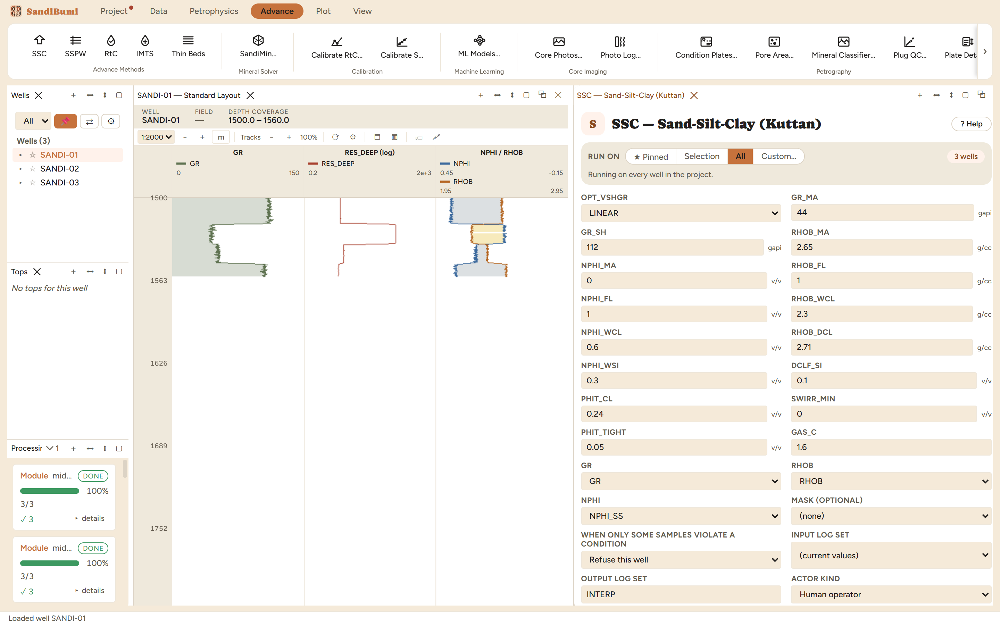
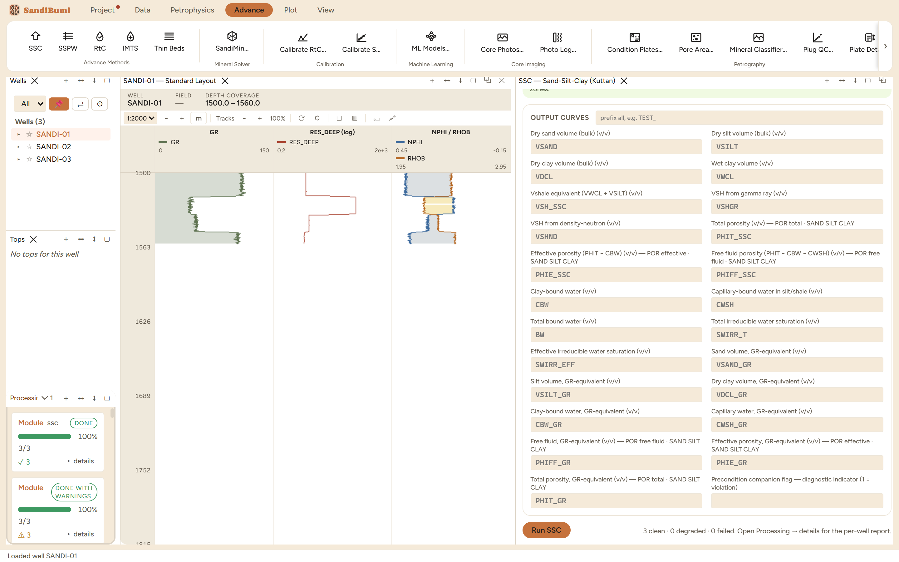

SSC — Sand-Silt-Clay (Kuttan)
6.6 ·sscSand-Silt-Clay model on the neutron-density crossplot: gas-conditions the (RHOB, NPHI) pair, projects it onto the dry line of a six-point framework, splits the rock into sand, silt and clay fractions, and carries the split through porosity, bound-water and irreducible-saturation arithmetic.
Gas conditioning (Δ = |PHIDI² − NPHI²|, c = GAS_C): PHID = √(PHIDI² − c·Δ/2), NPHI_COR = √(NPHI² + c·Δ/2) PHIT = (RHOMA − RHOB_COR)/(RHOMA − RHOB_FL), RHOMA = Σ fraction·ρ over sand/silt/clay PHIE = PHIT − VWCL·PHIT_CL, PHIFF = PHIT − CBW − CWSH SWIRR_T = BW/PHIT, SWIRR_EFF = 1 − PHIT·(1 − SWIRR_T)/PHIE
References
- Kuttan et al., Log Interpretation in the Malay Basin, 21st SPWLA Annual Logging Symposium
The modification and the two tight-rock conditioning rules are SandiBumi's own additions to the published model.
What this is and when to reach for it
The Sand-Silt-Clay model: a density-neutron crossplot method built for young, poorly consolidated clastic sections where the rock is honestly a three-way mix, following the Kuttan Malay Basin approach. Instead of one shale volume and one porosity, every sample is resolved into dry sand, dry silt and dry clay fractions, and the porosity is split into free fluid, clay-bound water and capillary-bound water held in silt and shale. Reach for it where a low-resistivity section keeps computing wet in sands that produce: the bound-water split it delivers is exactly what the RtC and IMTS saturation methods in this book consume.
The physics
The crossplot is framed by six points: fluid, clean matrix, wet clay, dry clay, wet silt, and a dry-clay fraction anchoring the silt point. Each (NPHI, RHOB) sample is first gas-conditioned (the GAS_C weight decides how far the answer sits between the density and neutron legs), then projected from the fluid point onto the dry rock line running from matrix to dry clay. Where the projection lands gives the sand-silt-clay fractions; the fraction-weighted matrix density turns the density log into total porosity; the clay fractions turn into bound-water volumes:
- PHIE = PHIT − VWCL·PHIT_CL: only clay-bound water is removed from effective porosity.
- PHIFF = PHIT − CBW − CWSH: free-fluid porosity also loses the capillary water held in silt and shale.
- SWIRR_T = BW/PHIT: the bound-water fraction of total porosity, the irreducible saturation the gas-sand calibration in the saturation book draws on.
Conditioning rules then clamp the split on tight and ultra-shaly rock: below PHIT_TIGHT (0.05 shipped) every non-clay-bound pore is declared capillary-held, so PHIFF goes to zero and SWIRR_T to one. That is a statement about producibility, not a failure.
The refusal on the way in
The GR input defaults to GRN, the normalized gamma ray, because on a multi-well study the endpoints below assume one calibrated GR scale. This dataset carries no GRN, and the run refuses per well before the module executes:
3 well(s) failed — ssc did not run: GR is unpopulated - none of the required input role [GR] has a finite sample. A curve with no finite sample carries no measurement to read, and the app will not stand one in for it. Select a populated curve in the module pane's 'Gamma ray (normalized)' field.
The fix is stated in the message, and it names the field: point the GR input at the populated curve (here the raw GR, since the three SANDI wells share one vintage). On a real field, run GR normalization first and keep the default.
The picks and why
- Framework points RHOB_WCL 2.3 / NPHI_WCL 0.6 / RHOB_DCL 2.71 / NPHI_WSI 0.3 / DCLF_SI 0.1, with SWIRR_MIN 0: the reference values the method note records for this crossplot family. They frame the triangle; a study refines the wet-clay point against its own shale trend.
- GR_MA 44 / GR_SH 112: the recorded endpoints of this dataset, the same pair the VSH chapters use, powering the GR-equivalent volume rescale.
- NPHI_MA 0 with the NPHI input on NPHI_SS: the model is entered in sandstone units, so the neutron is the converted curve from the Prep book and the matrix reads zero on it.
- PHIT_CL 0.24: not free-standing, it is (RHOB_DCL − RHOB_WCL)/(RHOB_DCL − RHOB_FL) computed from the clay points just entered, so the clay's porosity and its two densities stay one consistent statement.
Step by step
- Run Neutron Matrix Conversion (Prep book) so a sandstone-units neutron exists, and normalize GR on a multi-vintage field.
- Open Advance ▸ SSC, point GR at the populated gamma ray and NPHI at NPHI_SS, and enter the framework points with their sources in the custody line.
- Press Run SSC.

Reading the result
3 clean. The whole-section medians read shaly, and honestly so: median PHIT_SSC 0.1528, PHIE_SSC 0.062, and the free-fluid median is 0 with SWIRR_T's median at 1, because 591 of the 1164 answered samples fall to the tight and ultra-shaly conditioning rules (PHIFF 0, SWIRR_T 1). Splitting by rock tells the real story: restricted to the sands (GR < 60), median VSAND is 0.2656, PHIE_SSC 0.1894, free fluid 0.1137 and SWIRR_T 0.4466:
SELECT round(median(c.value), 4) FROM computed_curves c JOIN standard_curves sc ON c.well_id = sc.well_id AND c.depth = sc.depth WHERE c.curve_name = 'PHIFF_SSC' AND sc.gr < 60 AND NOT isnan(c.value)
The dial that moves the split: PHIT_CL raised from 0.24 to 0.30 (a more porous wet clay) drops the whole-section PHIE_SSC median from 0.062 to 0.0307 and lifts clay-bound water from 0.0876 to 0.1153. Half the effective porosity of the shaly section rides on that one clay statement, which is why it is derived from the entered clay points rather than picked by feel. Restored to 0.24, every number returns exactly.

QC and pitfalls
- Judge the model in the sands, not in the section median. A shaly interval is supposed to read SWIRR_T near 1; the question is whether the sand fractions and free fluid look right where the rock is sand.
- CWSH, the capillary-bound water, is the declared CAPBW input of the RtC saturation method. The conditioning rules that clamp it on tight streaks therefore move Sw downstream; when a tight streak matters, PHIT_TIGHT is a per-zone parameter, not a constant.
- The wet-clay point is the sensitive endpoint, exactly as the shale point is in the VSH crossplot chapter. Read it from this dataset's own shale trend on the density-neutron crossplot before trusting the split.
What the application enforces
Everything below is generated from the same manifest the application builds this module’s pane from, so the descriptions, defaults, sources, ranges and pre-run checks here are exactly what the running application enforces.
Sand-Silt-Clay model on the N-D crossplot (Kuttan Malay Basin, SandiBumi edit). Data points are projected from the fluid point onto the dry rock line (matrix→dry clay); sand/silt/clay fractions come from the projection position, matrix density from the fraction mix, PHIT from density. Bound water is split into clay-bound (CBW) and capillary-bound in silt/shale (CWSH): PHIE = PHIT − VWCL·PHIT_CL, PHIFF = PHIT − CBW − CWSH, SWIRR_T = BW/PHIT. GR-equivalent volumes rescale the SSC volumes to honour VSHGR. Study-specific crossplot endpoints ship absent and must be supplied from the active interpretation.
Input curves
| Role | Description | Resolves to | Required | Notes |
|---|---|---|---|---|
| GR | Gamma ray (normalized) | GRN | yes | — |
| RHOB | Bulk density (corrected) | RHOB | yes | — |
| NPHI | Neutron porosity (sandstone units) | NPHI | yes | — |
Parameters
Whole-well defaults; per-zone values from the Zones pane take precedence inside their zones (except where a parameter is marked one-value-per-well).
GR_MA (gapi)
Gamma ray matrix (clean)
- No shipped default. You supply this value, and a run entering it explicitly must also cite the source that covers it.
- Accepted range: 0 to 100 gapi
GR_SH (gapi)
Gamma ray clay
- No shipped default. You supply this value, and a run entering it explicitly must also cite the source that covers it.
- Accepted range: 0 to 1000 gapi
RHOB_MA (g/cc)
Density matrix
- Default: 2.65
- Accepted range: 1 to 4 g/cc
NPHI_MA (v/v)
Neutron matrix
- No shipped default. You supply this value, and a run entering it explicitly must also cite the source that covers it.
- Accepted range: -0.1 to 1.2 v/v
RHOB_FL (g/cc)
Density fluid
- Default: 1
- Accepted range: 0.5 to 4 g/cc
NPHI_FL (v/v)
Neutron fluid
- Default: 1
- Accepted range: -0.1 to 1.2 v/v
RHOB_WCL (g/cc)
Bulk density wet clay
- No shipped default. You supply this value, and a run entering it explicitly must also cite the source that covers it.
- Accepted range: 1 to 4 g/cc
NPHI_WCL (v/v)
Neutron porosity wet clay
- No shipped default. You supply this value, and a run entering it explicitly must also cite the source that covers it.
- Accepted range: -0.1 to 1.2 v/v
RHOB_DCL (g/cc)
Bulk density dry clay
- No shipped default. You supply this value, and a run entering it explicitly must also cite the source that covers it.
- Accepted range: 1 to 4 g/cc
NPHI_WSI (v/v)
Neutron porosity wet silt
- No shipped default. You supply this value, and a run entering it explicitly must also cite the source that covers it.
- Accepted range: -0.1 to 1.2 v/v
DCLF_SI (v/v)
Dry clay fraction at dry silt
- No shipped default. You supply this value, and a run entering it explicitly must also cite the source that covers it.
- Accepted range: 0 to 1 v/v
PHIT_CL (v/v)
Total porosity of clay
- No shipped default. You supply this value, and a run entering it explicitly must also cite the source that covers it.
- Accepted range: 0 to 0.8 v/v
SWIRR_MIN (v/v)
Minimum total irreducible Sw
- No shipped default. You supply this value, and a run entering it explicitly must also cite the source that covers it.
- Accepted range: 0 to 1 v/v
PHIT_TIGHT (v/v)
Total porosity below which all non-clay-bound porosity is capillary-held
- Default: 0.05
- Accepted range: 0 to 0.5 v/v
GAS_C
Gas-conditioning weight (0 = density only, 1 = even, 2 = neutron only)
- Default: 1.6
- Accepted range: 0 to 2
Options
OPT_VSHGR
VSH from gamma ray method
- Choices:
LINEARSTIEBER1STIEBER2STIEBER3LARINOV1LARINOV2LARINOV3CLAVIER
- Default:
LINEAR
Output curves
| Name | Description |
|---|---|
| VSAND | Dry sand volume (bulk) |
| VSILT | Dry silt volume (bulk) |
| VDCL | Dry clay volume (bulk) |
| VWCL | Wet clay volume |
| VSH_SSC | Vshale equivalent (VWCL + VSILT) |
| VSHGR | VSH from gamma ray |
| VSHND | VSH from density-neutron |
| PHIT_SSC | Total porosity |
| PHIE_SSC | Effective porosity (PHIT − CBW) |
| PHIFF_SSC | Free fluid porosity (PHIT − CBW − CWSH) |
| CBW | Clay-bound water |
| CWSH | Capillary-bound water in silt/shale |
| BW | Total bound water |
| SWIRR_T | Total irreducible water saturation |
| SWIRR_EFF | Effective irreducible water saturation |
| VSAND_GR | Sand volume, GR-equivalent |
| VSILT_GR | Silt volume, GR-equivalent |
| VDCL_GR | Dry clay volume, GR-equivalent |
| CBW_GR | Clay-bound water, GR-equivalent |
| CWSH_GR | Capillary water, GR-equivalent |
| PHIFF_GR | Free fluid, GR-equivalent |
| PHIE_GR | Effective porosity, GR-equivalent |
| PHIT_GR | Total porosity, GR-equivalent |